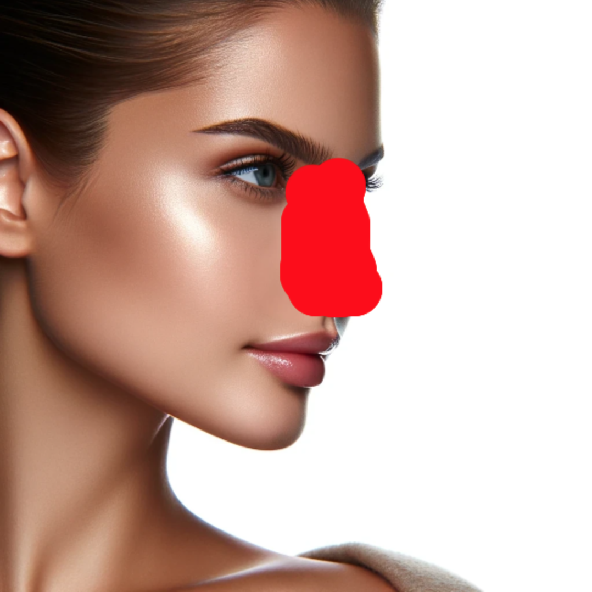

Sube tu foto y ve los resultados en segundos
Sube una foto del perfil de tu cara.
Para que los resultados sean óptimos, es importante que la foto sea de alta calidad y con un fondo blanco.
Ejemplo de foto que debes subir:
Dibujar en la imagen la nariz, de forma que quede completamente en rojo.
Ejemplo a continuación:
Ver los resultados generados por IA en segundos.